Amandeep Malhi
Programmer

Graphic Designer
3D Designer
Programmer
Graphic Designer
3D Designer
Brobobots: Terminating Termination is a 3rd person co-op action/puzzle game set in the fictional future. The game follows a humorous narrative and involves two protagonists; Dink and Megapixel who must use their unique abilities to work together though puzzles and obstacles to escape confinement.
Megapixels abilities include melee punches, a rocket fist and he can pick up and throw objects, enemies and even Dink! Dinks abilities allow him to headbutt enemies, blast them with an EMP and mind control them to fight other enemies and solve puzzles.
Team Mates: Kingsley Ip, Danica Valdes, Nicholas Ramsay.
My role as the lead programmer was to build the core mechanics of our game, focusing on player abilities and how they will be used on enemies.
So, I created a simple movement-based prototype in Unity 3D to test how the camera will follow the players as they move around the level, readjusting the height and angle as I felt fit. Once the position was established, I created basic objects to act as a placeholder for the first player and added a C# script for its movement using the keyboard. Then, I duplicated the object to create the second player in the environment and assigned different keys for movement in the same space and time as the first.
For our second prototype I continued adding to our game to prepare for our first playable prototype in the upcoming weeks.
To prepare our first playable prototype, I continued adding to the current build of our game. I kept the basic shapes from previous build and began building on top of that starting with player abilities. The first mechanic I added was allowing the player to pick up and throw objects, since our game allows one player to pick up and throw items, enemies and the second player. After doing some research, I was able to implement the picking up ability and with more research I was able too add in a force for the object to be thrown by. After that I added a simple vertical split screen for both players to see their characters at all times during gameplay when they have split up to look for clues.
During this time, my team members were working on creating sprites for players and environmental textures as well as planning out the design of the level and where puzzles, powerups and enemies would be located.
For the continuation of the prototypes, I implemented the rest of the abilities for both players in a sandbox level for debugging and testing with environmental elements. Player abilities are:
MegaPixel: Throw – Megapixel can pick up and throw enemies, objects in the environment and Dink. PixelPunch – A melee attack ability for fighting enemy bots. MagnoFist – MegaPixel shoots his fist in the direction of enemies to inflict damage with a cooldown.
Dink: EMP – Freeze enemy bots for 5 seconds allowing Dink to escape with cooldown for ability. Mind Control – Allows Dink to control enemies for a short period to unlock doors. Headbutt – A powerful headbutt that pushes enemies back but does not inflict a lot damage.
Our Alpha Code included the first two levels of our game, an introductory tutorial level showing players their abilities and how to move/interact within their environment, and the first level containing puzzles, enemies, powerups and a cutscene.
Feedback from the previous build showed that players were having difficulty understanding the split screen and felt it was too crowded when the players where near each other. They also felt that their field of view was too narrow and that they couldn’t see enough of the environment and enemies to continue playing in their normal style.
To combat this, I added a third camera to act as a dynamic shift for when players are in close proximity. So, the split screen will be active when the players are split-up but when they are closer the screen shifts into one overall camera showing both players and a larger view of the environment. The side their split screen shows on also depends on whether they exited the single screen on the left or right.

Once we reached the beta code stage in our development, we had created the third level, consisting of 3 puzzles that must be solved to unlock the last door leading to the final cutscene of the game. Since players and enemies were well established, the main focus for the team was designing/creating levels, further developing the storyline, sound design and adding to our UI.
After conducting our weekly playtesting session, we found that although the split screen was a little easier for players to understand, they still had difficulty noticing when the split screen was active. So my suggestion was to scrap the ‘traditional’ split screen and implement a Voronoi split screen instead, where the two objects are continually monitored by cameras, and the split screen line dynamically rotates based on their position. This split screen method is used in popular games like the LEGO franchise.
More playtesting was conducted to ensure that this new split screen method would be easier for players to understand while playing and it was, play testers were aware of when they had split up and found it very easy to find each other in the level.
Our final product was a showcase presentation displaying our gold code for our Advanced Game Design course, as well as 7 judges who were from the game industry.
Brobobots was played by members of our class, all industry judges and visitors to the showcase.